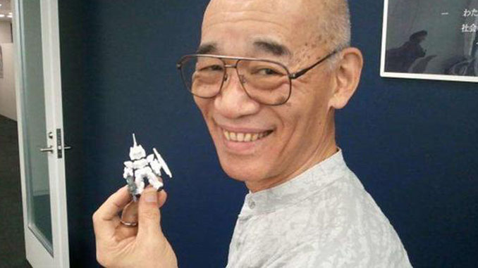
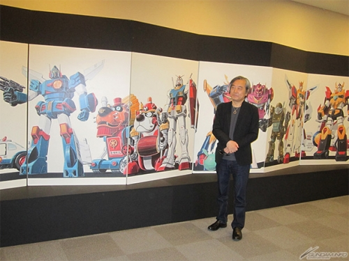

🤖 Gundam 🤖
นวัตกรรมและการออกแบบ
แนวคิด "Real Robot" โยชิยูกิ โทมิโนะ (Yoshiyuki Tomino) และทีมงานของเขาต้องการสร้างซีรีส์หุ่นยนต์ที่เน้นความเป็น จริงของเทคโนโลยีและสงคราม พวกเขาได้นำเสนอหุ่นยนต์ที่มีข้อจำกัดทางกลไก มีการใช้งานทรัพยากรและพลังงานอย่างมีเหตุผล และสามารถเกิดความเสียหายได้จริงในสนามรบ นอกจากนี้ยังมีการสำรวจปัจจัยทางสังคมและการเมืองที่ส่งผลต่อสงครามและการใช้งานหุ่นยนต์ แนวคิดนี้ทำให้ Gundam แตกต่างจากอนิเมะหุ่นยนต์ยักษ์อื่นๆ ในยุคนั้น เช่น Mazinger Z และ Getter Robo ที่หุ่นยนต์มักมีพลังพิเศษและไม่สามารถถูกทำลายได้ง่ายๆ แนว "Real Robot" นี้นำเสนอหุ่นยนต์ที่มีการออกแบบที่สมจริงและเชื่อมโยงกับวิทยาศาสตร์และเทคโนโลยีในโลกจริง
การออกแบบหุ่นยนต์ คุนิโอะ โอคาวาระ (Kunio Okawara) เป็นผู้ออกแบบหุ่นยนต์ Gundam RX-78-2 ที่กลายเป็นสัญลักษณ์ของซีรีส์ Gundam การออกแบบของโอคาวาระเน้นไปที่ความเป็นจริงและความสามารถทางวิศวกรรม หุ่นยนต์นี้มีลักษณะเด่นคือตัวถังสีขาว หัวที่มีเสาอากาศคู่ และอาวุธต่างๆ เช่น บีมเซเบอร์และโล่ โอคาวาระใช้แนวคิดของ "โมบิลสูท" (Mobile Suit) ซึ่งเป็นหุ่นยนต์ที่มีการควบคุมภายในโดยนักบิน การออกแบบนี้ทำให้ Gundam มีความสมจริงและมีเอกลักษณ์เฉพาะตัว นอกจากนี้ยังมีการออกแบบหุ่นยนต์และยานพาหนะอื่นๆ ในซีรีส์ที่มีความหลากหลายและน่าสนใจ เช่น โมบิลสูทของจักรวรรดิเซออนที่มีลักษณะเป็นหุ่นยนต์สีน้ำตาลและเขียว รวมถึงโมบิลสูทที่มีรูปแบบและขนาดที่แตกต่างกัน